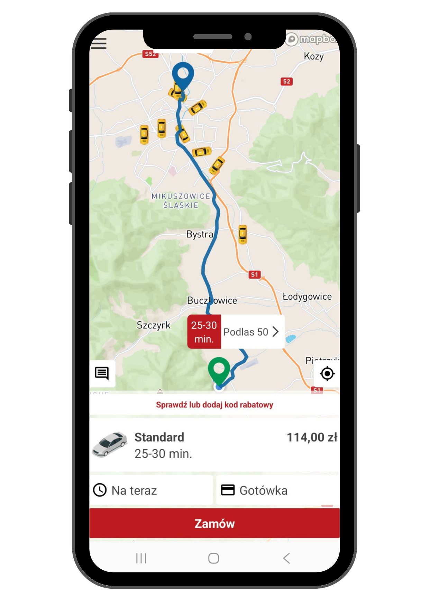

11 297
Pobrań
Aktywnych użytkowników korzystających z aplikacji Okay Taxi w Bielsku-Białej i na Podbeskidziu.

Zamawianie taksówek jeszcze nigdy nie było tak łatwe. Pobierz bezpłatną aplikację na swój smartfon — iOS lub Android.


Nieustannie zmieniamy, aktualizujemy i poprawiamy aplikację, żeby coraz więcej ludzi mogło korzystać z naszych usług.
Aktywnych użytkowników korzystających z aplikacji Okay Taxi w Bielsku-Białej i na Podbeskidziu.
Ocena aplikacji w App Store i Google Play wystawiona przez realnych użytkowników.
Tyle wszystkich zamówień Okay Taxi trafia do nas bezpośrednio przez aplikację mobilną.
Film prezentacyjny aplikacji Okay Taxi — zamawianie, śledzenie, płatność w jednym miejscu.
Film dostępny też na Facebook Reels
Często bywa tak, że nasi dyspozytorzy odbierają setki telefonów na godzinę. Niektórzy klienci długo czekają na swoją kolej, a w skrajnych przypadkach połączenie telefoniczne ma sporo zakłóceń.
Nerwy są tu zbędne — do dyspozycji klientów mamy dedykowaną aplikację mobilną. Zamawiaj kursy gdzie chcesz, kiedy chcesz i jak chcesz!
Aplikacja Okay Taxi jest dostępna bezpłatnie na Android (Google Play) i iOS (App Store). Jedyne czego potrzebujesz, to numer telefonu do rejestracji.

Aplikacja Okay Taxi to znacznie więcej niż tylko zamawianie taksówki — to kompletne narzędzie do kontroli przejazdu.
Decyduj o dacie i czasie przyjazdu taksówki. Rezerwuj na jutro rano, za tydzień, na konkretną godzinę. Szczególnie przydatne przy transferach lotniskowych.
Wiesz dokładnie ile zapłacisz za przejazd na wyznaczonej przez siebie trasie. Cena jest wyświetlana przed zamówieniem — żadnych niespodzianek.
Sprawdzaj na żywo, gdzie jest Twoja taksówka. Mapa pokazuje aktualne położenie pojazdu i szacowany czas przyjazdu. Żadnego nerwowego wyglądania przez okno.
Wpisuj kody rabatowe bezpośrednio w aplikacji. Akcje promocyjne, specjalne oferty i zniżki — wszystko w jednym miejscu.
Zamów większy pojazd (bus 5-8 osób) lub kombi bezpośrednio z aplikacji. Wybierasz odpowiednie auto pod swoje potrzeby i wielkość grupy.
Poproś o kierowcę mówiącego po angielsku lub niemiecku. Idealne dla turystów odwiedzających Bielsko-Białą, Szczyrk, Wisłę czy Ustroń.
Poinformuj z wyprzedzeniem o przewozie zwierzęcia. Dyspozytor wyśle pojazd odpowiednio przystosowany do transportu Twojego pupila.
Ustaw czy zapłacisz kartą, BLIK-iem, w aplikacji czy gotówką. Karta zapamiętana raz — kolejne przejazdy opłacasz jednym kliknięciem.
Dodawaj uwagi dla kierowcy — fotelik dziecięcy, duży bagaż, preferowane miejsce odbioru. Wszystko dla Ciebie!
Znajdź „Okay Taxi" w App Store (iOS) lub Google Play (Android). Instalacja bezpłatna, zajmuje kilka sekund.
Podaj numer telefonu i zweryfikuj go kodem SMS. Dodaj imię i opcjonalnie kartę płatniczą do szybkich płatności.
Wybierz punkt odbioru i cel, zobacz cenę, wybierz preferencje i zatwierdź. Taksówka przyjedzie w kilka minut.
Tak, aplikacja Okay Taxi jest całkowicie bezpłatna zarówno na iOS (App Store), jak i Android (Google Play). Nie ma żadnych opłat subskrypcyjnych ani ukrytych kosztów za korzystanie z aplikacji. Płacisz wyłącznie za faktyczne przejazdy.
Aplikacja Okay Taxi ma 11 297 pobrań i średnią ocenę 4,1/5 gwiazdek. Aż 31% wszystkich przejazdów Okay Taxi jest zamawianych bezpośrednio przez aplikację.
Aplikacja jest dostępna w dwóch sklepach: iOS (iPhone): Wyszukaj „Okay Taxi" w App Store lub użyj bezpośredniego linku. Android: Wyszukaj „Okay Taxi" w Google Play lub użyj bezpośredniego linku.
Gwarancja ceny oznacza, że wiesz dokładnie ile zapłacisz za przejazd na wyznaczonej trasie — cena jest wyświetlana przed zamówieniem taksówki. Żadnych niespodzianek na liczniku. Cena uwzględnia wszystkie dopłaty (kombi, premium, busy, zwierzęta).
Tak, w aplikacji Okay Taxi możesz poprosić o kierowcę mówiącego po angielsku lub niemiecku. Funkcja szczególnie przydatna dla turystów odwiedzających Szczyrk, Wisłę, Ustroń czy Bielsko-Białą.
W aplikacji Okay Taxi możesz wybrać sposób płatności: karta (Visa, Mastercard), BLIK, płatność w aplikacji (karta zapamiętana raz) lub gotówka w samochodzie. Ustawisz to jednym kliknięciem.
Tak, aplikacja Okay Taxi pokazuje aktualną lokalizację pojazdu na mapie GPS w czasie rzeczywistym. Widzisz, gdzie jest taksówka, szacowany czas przyjazdu i trasę dojazdu.
Tak, w aplikacji wybierasz datę i godzinę przyjazdu taksówki. Rezerwacja z wyprzedzeniem jest szczególnie przydatna przy transferach lotniskowych, wczesnych porannych kursach i stałych dojazdach do pracy.
Tak, aplikacja Okay Taxi obsługuje kody rabatowe. Wpisz kod bezpośrednio przy zamawianiu przejazdu — zniżka zostanie naliczona automatycznie. Kody rabatowe dostępne są w ramach akcji promocyjnych i specjalnych ofert.
Tak, przy pierwszym użyciu podajesz numer telefonu, który weryfikujesz kodem SMS. Rejestracja zajmuje mniej niż minutę. Opcjonalnie możesz dodać kartę płatniczą do szybkich płatności.
Aplikacja Okay Taxi jest bezpłatną aplikacją mobilną do zamawiania taksówek w Bielsku-Białej i na Podbeskidziu. Dostępna na systemy Android (Google Play) i iOS (App Store). Aplikacja ma 11 297 pobrań i średnią ocenę 4,1/5 gwiazdek. Aż 31% wszystkich przejazdów Okay Taxi jest zamawianych właśnie przez aplikację.
Kluczową funkcją aplikacji jest gwarancja ceny — użytkownik widzi dokładną cenę przejazdu na wybranej trasie przed zamówieniem. Aplikacja obsługuje również: rezerwacje z wyprzedzeniem na konkretną datę i godzinę, śledzenie lokalizacji taksówki na mapie GPS w czasie rzeczywistym, wpisywanie kodów rabatowych, wybór większego pojazdu (bus 5-8 osób, kombi), zgłaszanie przewozu zwierząt oraz preferencji dotyczących kierowcy (języki obce — angielski, niemiecki).
Metody płatności w aplikacji: karta płatnicza Visa lub Mastercard, BLIK, płatność w aplikacji (karta zapamiętana raz — kolejne przejazdy opłacane jednym kliknięciem) oraz klasyczna gotówka w samochodzie. Użytkownik może dodawać uwagi dla kierowcy, np. prośbę o fotelik dziecięcy czy miejsce odbioru.
Rejestracja w aplikacji zajmuje mniej niż minutę — wystarczy podać numer telefonu zweryfikowany kodem SMS. Opcjonalnie można dodać imię i kartę płatniczą. Po instalacji użytkownik ma natychmiastowy dostęp do floty 111 taksówek Okay Taxi w 17 miastach Podbeskidzia.
Pobierz aplikację z App Store: apps.apple.com lub z Google Play: play.google.com. Możesz też zamówić taxi telefonicznie: 720 535 353.